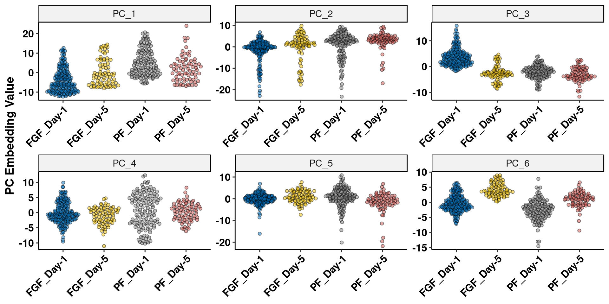
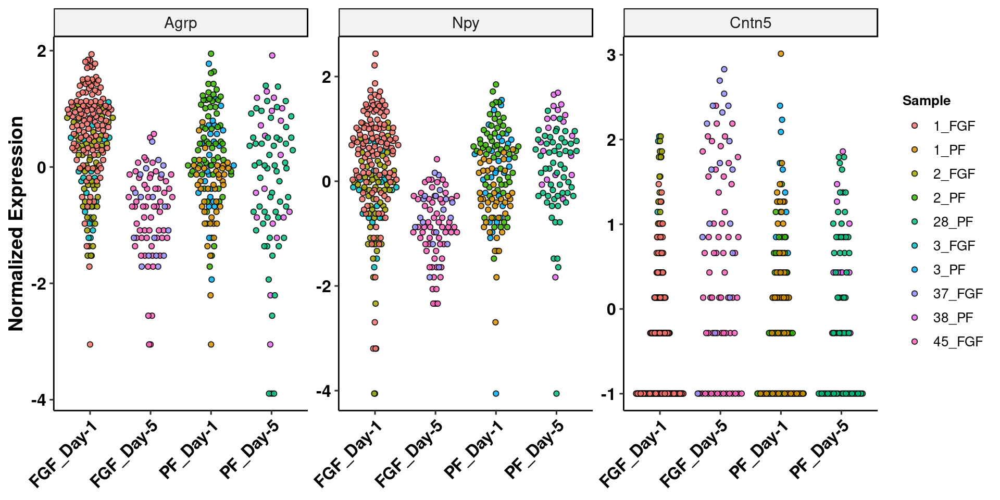

Agrp_Analysis
Last updated: 2019-10-28
Checks: 6 1
Knit directory: fgf_alldata/
This reproducible R Markdown analysis was created with workflowr (version 1.4.0). The Checks tab describes the reproducibility checks that were applied when the results were created. The Past versions tab lists the development history.
Great! Since the R Markdown file has been committed to the Git repository, you know the exact version of the code that produced these results.
The global environment had objects present when the code in the R Markdown file was run. These objects can affect the analysis in your R Markdown file in unknown ways. For reproduciblity it’s best to always run the code in an empty environment. Use wflow_publish or wflow_build to ensure that the code is always run in an empty environment.
The following objects were defined in the global environment when these results were created:
| Name | Class | Size |
|---|---|---|
| data | environment | 56 bytes |
| env | environment | 56 bytes |
The command set.seed(20191021) was run prior to running the code in the R Markdown file. Setting a seed ensures that any results that rely on randomness, e.g. subsampling or permutations, are reproducible.
Great job! Recording the operating system, R version, and package versions is critical for reproducibility.
Nice! There were no cached chunks for this analysis, so you can be confident that you successfully produced the results during this run.
Great job! Using relative paths to the files within your workflowr project makes it easier to run your code on other machines.
Great! You are using Git for version control. Tracking code development and connecting the code version to the results is critical for reproducibility. The version displayed above was the version of the Git repository at the time these results were generated.
Note that you need to be careful to ensure that all relevant files for the analysis have been committed to Git prior to generating the results (you can use wflow_publish or wflow_git_commit). workflowr only checks the R Markdown file, but you know if there are other scripts or data files that it depends on. Below is the status of the Git repository when the results were generated:
Ignored files:
Ignored: .Rproj.user/
Ignored: test_files/
Untracked files:
Untracked: code/sc_functions.R
Untracked: data/fgf_filtered_nuclei.RDS
Untracked: data/filtglia.RDS
Untracked: data/glia/
Untracked: data/lps1.txt
Untracked: data/mcao1.txt
Untracked: data/mcao_d3.txt
Untracked: data/mcaod7.txt
Untracked: data/neur_astro_induce.xlsx
Untracked: data/neuron/
Untracked: data/synaptic_activity_induced.xlsx
Untracked: docs/figure/
Untracked: olig_ttest_padj.csv
Untracked: output/agrp_pcgenes.csv
Untracked: output/all_wc_markers.csv
Untracked: output/allglia_wgcna_genemodules.csv
Untracked: output/glia/
Untracked: output/glial_markergenes.csv
Untracked: output/integrated_all_markergenes.csv
Untracked: output/integrated_neuronmarkers.csv
Untracked: output/neuron/
Unstaged changes:
Modified: analysis/8_astro_wgcna.Rmd
Note that any generated files, e.g. HTML, png, CSS, etc., are not included in this status report because it is ok for generated content to have uncommitted changes.
There are no past versions. Publish this analysis with wflow_publish() to start tracking its development.
library(Seurat)
library(tidyverse)
library(gProfileR)
library(ggraph)
library(future)
library(org.Mm.eg.db)
library(reactome.db)
library(ggraph)
library(igraph)
library(DESeq2)
library(here)
library(tidyverse)
library(ggrepel)
library(ggpubr)
library(wesanderson)
library(tidygraph)
library(ggforce)
library(reshape2)
library(ggbeeswarm)
library(ggsci)
library(cowplot)
library(gt)
plan(multiprocess, workers=16)
options(future.globals.maxSize = 4000 * 1024^2)Load prepped data
fgf.neur.sub<-readRDS(here("data/neuron/neurons_seur_filtered.RDS"))Specific Agrp analysis
agrp<-subset(fgf.neur.sub, ident="Agrp")
agrp %>% ScaleData(verbose=F) %>%
FindVariableFeatures(selection.method = "vst", nfeatures = 2000) %>%
RunPCA(ndims.print=1:10)->agrp
list_sub<-SplitObject(agrp, split.by="sample")
pb<-(lapply(list_sub, function(y) {
DefaultAssay(y) <- "SCT"
mat<-GetAssayData(y, slot="counts")
counts <- Matrix::rowSums(mat)
}) %>% do.call(rbind, .) %>% t() %>% as.data.frame())
trt<-ifelse(grepl("FGF", colnames(pb)), yes="F", no="P")
batch<-as.factor(sapply(strsplit(colnames(pb),"_"),"[",1))
day<-ifelse(as.numeric(as.character(batch))>10, yes="Day-5", no="Day-1")
group<-paste0(trt,"_",day)
meta<-data.frame(trt=trt, day=factor(day), group=group)
dds <- DESeqDataSetFromMatrix(countData = pb,
colData = meta,
design = ~ 0 + group)
keep <- rowSums(counts(dds) >= 5) > 5
dds <- dds[keep,]
dds<-DESeq(dds)
res_5<-results(dds, contrast = c("group","F_Day-5","P_Day-5"))
res_1<-results(dds, contrast = c("group","F_Day-1","P_Day-1"))
f_5_1<-results(dds, contrast = c("group","F_Day-5","F_Day-1"))
p_5_1<-results(dds, contrast = c("group","P_Day-5","P_Day-1"))Filter 24 hr results
res_1<-as.data.frame(res_1)
res_1<-res_1[complete.cases(res_1),]
res_1<-res_1[order(res_1$padj),]
res_1$gene<-rownames(res_1)
write_csv(res_1, path=here("output/neuron/agrp_24hr_dge.csv"))Volcano Plot of DE genes
res_1 %>% add_rownames("gene") %>%
mutate(siglog=ifelse(padj<0.05&abs(log2FoldChange)>1, yes=T, no=F)) %>%
mutate(onlysig=ifelse(padj<0.05&abs(log2FoldChange)<1, yes=T, no=F)) %>%
mutate(onlylog=ifelse(padj>0.05&abs(log2FoldChange)>1, yes=T, no=F)) %>%
mutate(col=ifelse(siglog==T, yes="1", no =
ifelse(onlysig==T, yes="2", no =
ifelse(onlylog==T, yes="3", no="4")))) %>%
mutate(label=ifelse(padj<0.01, yes=gene, no="")) %>%
dplyr::select(gene, log2FoldChange, padj, col, label) -> volcWarning: Deprecated, use tibble::rownames_to_column() instead.ggplot(volc, aes(y=(-log10(padj)), x=log2FoldChange, fill=factor(col), label=label)) +
xlab(expression(Log[2]*~Fold*~Change)) + ylab(expression(-Log[10]*~pvalue))+
geom_point(shape=21, size=3, alpha=0.75) + geom_hline(yintercept = -log10(0.05), linetype="dashed") +
geom_vline(xintercept = c(-1,1), linetype="dashed") + geom_text_repel() + theme_pubr() + labs_pubr() +
theme(legend.position = "none") +
scale_fill_manual(values = wes_palette("Royal1", 4, type="discrete"))
GO Term Analysis
resgo<-res_1[res_1$padj<0.1,]
resgo<-resgo[resgo$log2FoldChange>0,]
ego<-gprofiler(rownames(resgo), organism = "mmusculus", significant = T, custom_bg = rownames(dds),
src_filter = c("GO:BP","GO:MF","REAC","KEGG"),hier_filtering = "strong",
min_isect_size = 3,
sort_by_structure = T,exclude_iea = T,
min_set_size = 10, max_set_size = 300,correction_method = "fdr")
write_csv(ego, path=here("output/neuron/agrp_24hr_goterms.csv"))
ego %>% arrange(p.value) %>%
select(domain, term.name, p.value) %>%
head(10) %>%
gt()| domain | term.name | p.value |
|---|---|---|
| BP | regulation of membrane potential | 0.000773 |
| MF | voltage-gated cation channel activity | 0.001780 |
| BP | inorganic cation transmembrane transport | 0.002580 |
| BP | animal organ morphogenesis | 0.008260 |
| BP | multicellular organism growth | 0.011000 |
| BP | cellular response to nitrogen compound | 0.014400 |
| BP | regulation of long-term synaptic potentiation | 0.020600 |
| rea | Neuronal System | 0.023700 |
| BP | transmembrane receptor protein tyrosine kinase signaling pathway | 0.029900 |
| BP | synapse organization | 0.031300 |
GO similarity plot
mouse.GO <- as.data.frame(org.Mm.egGO2ALLEGS)[,c("gene_id","go_id")]
mouse.PATH <- as.data.frame(org.Mm.egPATH2EG)[,c("gene_id","path_id")]
mouse.PATH$path_id<-paste0("KEGG:",mouse.PATH$path_id)
mouse.REAC <- as.data.frame(reactomePATHID2EXTID)[,c("gene_id","DB_ID")]
colnames(mouse.REAC)[2]<-"path_id"
mouse.REAC$path_id<-paste0("REAC:",mouse.REAC$path_id)
colnames(mouse.GO)[2]<-"path_id"
allpaths<-rbind(mouse.GO, mouse.PATH)
jac<-allpaths[allpaths$path_id%in%ego$term.id,]
jac_list<-split(jac$gene_id, f = jac$path_id)
df<-stringdist::seq_distmatrix(jac_list,method="jw")
attributes(df)$Labels<-ego[match(attributes(df)$Labels, ego$term.id),"term.name"]
g<-graph.adjacency(
as.matrix(df),
mode="undirected",
weighted=TRUE,
diag=T)
g<-delete_edges(g,which(E(g)$weight>.6))
g<-as_tbl_graph(g)
g %>% activate(nodes) %>%
mutate(db = factor(toupper(ego[match(name, ego$term.name),"domain"]))) %>%
mutate(pval = -log10(ego[match(name, ego$term.name),"p.value"])) -> g
g %>% activate(nodes) %>%
mutate(community = as.factor(group_edge_betweenness())) %>% group_by(community) %>%
mutate(label=ifelse(pval==max(pval),name, NA)) -> g
set.seed("139")
ggraph(g, layout = "fr") +
geom_edge_link(color="black", aes(width = weight), alpha = 0.2, show.legend = F) +
scale_edge_width(range = c(0.2, 1)) +
geom_node_point(aes(size=pval, colour=db)) + scale_size(range = c(2,10)) + guides(colour = guide_legend(override.aes = list(size = 5))) +
geom_mark_hull(aes(x=x,y=y, fill=community), show.legend = F) +
geom_label_repel(aes(x=x,y=y,label=str_wrap(label,20)),fontface="bold", size=4, min.segment.length = .1, nudge_y = .5, alpha=0.5) +
labs(colour="Database", size=expression(log[10]*pvalue)) +
theme_graph()Warning: Removed 7 rows containing missing values (geom_label_repel).
ggsave(filename = here("output/neuron/agrp_go_graph.png"))Warning: Removed 7 rows containing missing values (geom_label_repel).D5 v D1
embed <- data.frame(Embeddings(agrp, reduction = "pca")[,1:10])
embed$group <- agrp$group
embed <- melt(embed, id.vars = "group")
ggplot(embed[embed$variable%in%c("PC_1","PC_2","PC_3","PC_4","PC_5","PC_6"),], aes(x = group, y=value)) +
geom_quasirandom(aes(fill=group), alpha=.5, shape=21) +
facet_wrap(.~variable, scales="free") +
scale_fill_jco() + theme_pubr() +
theme(legend.position = "none", axis.text.x = element_text(angle=45, hjust=1)) +
ylab("PC Embedding Value") + xlab(NULL) + labs_pubr()
ggsave(filename = here("output/neuron/agrp_pc_graph.png"))Calculate Variance Explained
mat <- Seurat::GetAssayData(agrp, assay = "SCT", slot = "scale.data")
pca <- agrp[["pca"]]
# Get the total variance:
total_variance <- sum(matrixStats::rowVars(mat))
eigValues = Stdev(object = agrp, reduction = "pca")^2
varExplained = eigValues / total_varianceExtract genes from top loading PCs
pc1<-rownames(agrp@reductions$pca[order(agrp@reductions$pca[,1]),])[1:100]
pc4<-rownames(agrp@reductions$pca[order(-agrp@reductions$pca[,4]),])[1:100]
pc6<-rownames(agrp@reductions$pca[order(-agrp@reductions$pca[,6]),])[1:100]
imp_pcs<-data.frame(pc1=rownames(agrp@reductions$pca[order(agrp@reductions$pca[,1]),]), pc4=rownames(agrp@reductions$pca[order(-agrp@reductions$pca[,4]),]),pc6=rownames(agrp@reductions$pca[order(-agrp@reductions$pca[,6]),]))
write_csv(imp_pcs, path=here("output/agrp_pcgenes.csv"))res_5<-as.data.frame(res_5)
res_5<-res_5[complete.cases(res_5),]
res_5[order(res_5$pvalue),] %>% add_rownames("gene") %>% filter(baseMean>100)Warning: Deprecated, use tibble::rownames_to_column() instead.# A tibble: 92 x 7
gene baseMean log2FoldChange lfcSE stat pvalue padj
<chr> <dbl> <dbl> <dbl> <dbl> <dbl> <dbl>
1 Cntn5 173. 1.74 0.487 3.57 0.000354 0.883
2 Mylip 233. -1.47 0.527 -2.79 0.00523 1.000
3 Pcdh15 147. 1.06 0.383 2.77 0.00563 1.000
4 Nlgn1 181. 0.850 0.349 2.44 0.0148 1.000
5 Pcdh7 194. 0.925 0.400 2.31 0.0208 1.000
6 Galntl6 142. 0.912 0.408 2.24 0.0254 1.000
7 Nrg1 157. 0.773 0.375 2.06 0.0392 1.000
8 Lrrtm4 167. 0.860 0.449 1.92 0.0554 1.000
9 Npy 1264. -1.33 0.716 -1.85 0.0643 1.000
10 Syt1 103. 0.761 0.421 1.81 0.0708 1.000
# … with 82 more rowsGO term enrichment for PC6 (highest value for FGF_D5)
pc6_go<-gprofiler(pc6, organism = "mmusculus", significant = T,
src_filter = c("GO:BP","GO:MF","REAC", "KEGG"),hier_filtering = "strong",
min_isect_size = 3,
sort_by_structure = T,exclude_iea = T,
min_set_size = 10, max_set_size = 500,correction_method = "fdr")
write_csv(pc6_go, path=here("output/neuron/agrp_PC6_goterms.csv"))
pc6_go %>% arrange(p.value) %>%
select(domain, term.name, p.value) %>%
head(10) %>%
gt()| domain | term.name | p.value |
|---|---|---|
| rea | Neuronal System | 2.59e-06 |
| BP | forebrain development | 1.14e-04 |
| BP | regulation of transmembrane transport | 1.02e-03 |
| BP | presynaptic membrane organization | 1.02e-03 |
| BP | cell-cell adhesion via plasma-membrane adhesion molecules | 2.07e-03 |
| BP | positive regulation of neurogenesis | 2.41e-03 |
| BP | cellular potassium ion transport | 2.41e-03 |
| BP | regulation of cell morphogenesis | 4.47e-03 |
| keg | Gap junction | 4.72e-03 |
| BP | negative regulation of JAK-STAT cascade | 4.78e-03 |
Plot top loading genes
imp_gene<-data.frame(t(agrp[["SCT"]]@scale.data[c("Agrp","Npy","Cntn5"),]))
imp_gene$group<-agrp$group
imp_gene$Sample<-agrp$sample
imp_gene<-melt(imp_gene, id.vars = c("group","Sample"))
ggplot(imp_gene[sample(nrow(imp_gene)),], aes(x=group, y=value)) +
geom_quasirandom(aes(fill=Sample),alpha=.85, shape=21) +
facet_wrap(.~variable, scales = "free", nrow = 1) + theme_pubr() +
theme(axis.text.x = element_text(angle=45, hjust=1), legend.position = "right") +
ylab("Normalized Expression") + xlab(NULL) + labs_pubr()
ggsave(filename = here("output/neuron/agrp_imp_gene.png"))
sessionInfo()R version 3.5.3 (2019-03-11)
Platform: x86_64-pc-linux-gnu (64-bit)
Running under: Storage
Matrix products: default
BLAS/LAPACK: /usr/lib64/libopenblas-r0.3.3.so
locale:
[1] LC_CTYPE=en_DK.UTF-8 LC_NUMERIC=C
[3] LC_TIME=en_DK.UTF-8 LC_COLLATE=en_DK.UTF-8
[5] LC_MONETARY=en_DK.UTF-8 LC_MESSAGES=en_DK.UTF-8
[7] LC_PAPER=en_DK.UTF-8 LC_NAME=C
[9] LC_ADDRESS=C LC_TELEPHONE=C
[11] LC_MEASUREMENT=en_DK.UTF-8 LC_IDENTIFICATION=C
attached base packages:
[1] parallel stats4 stats graphics grDevices utils datasets
[8] methods base
other attached packages:
[1] gt_0.1.0 cowplot_1.0.0
[3] ggsci_2.9 ggbeeswarm_0.6.0
[5] reshape2_1.4.3 ggforce_0.3.0.9000
[7] tidygraph_1.1.2 wesanderson_0.3.6.9000
[9] ggpubr_0.2.1 magrittr_1.5
[11] ggrepel_0.8.1 here_0.1
[13] DESeq2_1.22.2 SummarizedExperiment_1.12.0
[15] DelayedArray_0.8.0 BiocParallel_1.16.6
[17] matrixStats_0.54.0 GenomicRanges_1.34.0
[19] GenomeInfoDb_1.18.2 igraph_1.2.4.1
[21] reactome.db_1.66.0 org.Mm.eg.db_3.7.0
[23] AnnotationDbi_1.44.0 IRanges_2.16.0
[25] S4Vectors_0.20.1 Biobase_2.42.0
[27] BiocGenerics_0.28.0 future_1.14.0
[29] ggraph_1.0.2 gProfileR_0.6.7
[31] forcats_0.4.0 stringr_1.4.0
[33] dplyr_0.8.3 purrr_0.3.2
[35] readr_1.3.1.9000 tidyr_0.8.3
[37] tibble_2.1.3 ggplot2_3.2.1
[39] tidyverse_1.2.1 Seurat_3.0.3.9036
loaded via a namespace (and not attached):
[1] utf8_1.1.4 reticulate_1.13 R.utils_2.9.0
[4] tidyselect_0.2.5 RSQLite_2.1.1 htmlwidgets_1.3
[7] grid_3.5.3 Rtsne_0.15 munsell_0.5.0
[10] codetools_0.2-16 ica_1.0-2 withr_2.1.2
[13] colorspace_1.4-1 highr_0.8 knitr_1.23
[16] rstudioapi_0.10 ROCR_1.0-7 ggsignif_0.5.0
[19] gbRd_0.4-11 listenv_0.7.0 labeling_0.3
[22] Rdpack_0.11-0 git2r_0.25.2 GenomeInfoDbData_1.2.0
[25] polyclip_1.10-0 bit64_0.9-7 farver_1.1.0
[28] rprojroot_1.3-2 vctrs_0.2.0 generics_0.0.2
[31] xfun_0.8 R6_2.4.0 rsvd_1.0.2
[34] locfit_1.5-9.1 concaveman_1.0.0 bitops_1.0-6
[37] assertthat_0.2.1 SDMTools_1.1-221.1 scales_1.0.0
[40] nnet_7.3-12 beeswarm_0.2.3 gtable_0.3.0
[43] npsurv_0.4-0 globals_0.12.4 workflowr_1.4.0
[46] rlang_0.4.0 genefilter_1.64.0 zeallot_0.1.0
[49] splines_3.5.3 lazyeval_0.2.2 acepack_1.4.1
[52] checkmate_1.9.4 broom_0.5.2 yaml_2.2.0
[55] modelr_0.1.4 backports_1.1.4 Hmisc_4.2-0
[58] tools_3.5.3 gplots_3.0.1.1 RColorBrewer_1.1-2
[61] ggridges_0.5.1 Rcpp_1.0.2 plyr_1.8.4
[64] base64enc_0.1-3 zlibbioc_1.28.0 RCurl_1.95-4.12
[67] rpart_4.1-15 pbapply_1.4-1 viridis_0.5.1
[70] zoo_1.8-6 haven_2.1.0 cluster_2.1.0
[73] fs_1.3.1 data.table_1.12.2 lmtest_0.9-37
[76] RANN_2.6.1 fitdistrplus_1.0-14 xtable_1.8-4
[79] hms_0.5.0 lsei_1.2-0 evaluate_0.14
[82] XML_3.98-1.20 readxl_1.3.1 gridExtra_2.3
[85] compiler_3.5.3 V8_2.3 KernSmooth_2.23-15
[88] crayon_1.3.4 R.oo_1.22.0 htmltools_0.3.6
[91] Formula_1.2-3 geneplotter_1.60.0 RcppParallel_4.4.3
[94] lubridate_1.7.4 DBI_1.0.0 tweenr_1.0.1
[97] MASS_7.3-51.4 Matrix_1.2-17 cli_1.1.0
[100] R.methodsS3_1.7.1 gdata_2.18.0 metap_1.1
[103] pkgconfig_2.0.2 foreign_0.8-71 plotly_4.9.0
[106] xml2_1.2.0 annotate_1.60.1 vipor_0.4.5
[109] stringdist_0.9.5.2 XVector_0.22.0 bibtex_0.4.2
[112] rvest_0.3.4 digest_0.6.20 sctransform_0.2.0
[115] RcppAnnoy_0.0.12 tsne_0.1-3 rmarkdown_1.13
[118] cellranger_1.1.0 leiden_0.3.1 htmlTable_1.13.1
[121] uwot_0.1.3 curl_4.0 gtools_3.8.1
[124] nlme_3.1-140 jsonlite_1.6 fansi_0.4.0
[127] viridisLite_0.3.0 pillar_1.4.2 lattice_0.20-38
[130] httr_1.4.1 survival_2.44-1.1 glue_1.3.1
[133] png_0.1-7 bit_1.1-14 sass_0.1.2.1
[136] stringi_1.4.3 blob_1.1.1 latticeExtra_0.6-28
[139] caTools_1.17.1.2 memoise_1.1.0 irlba_2.3.3
[142] future.apply_1.3.0 ape_5.3